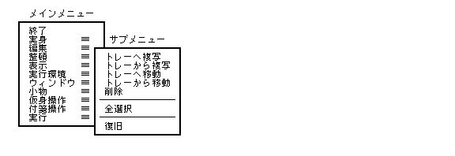
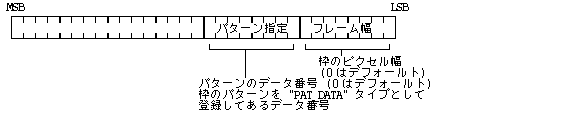
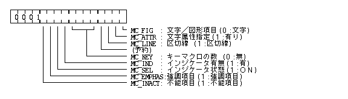
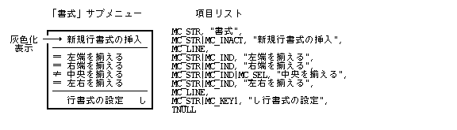
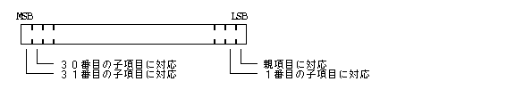
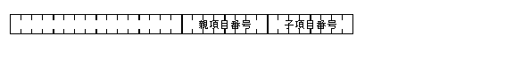
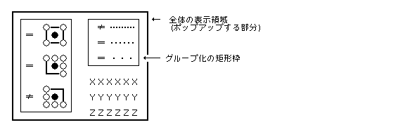
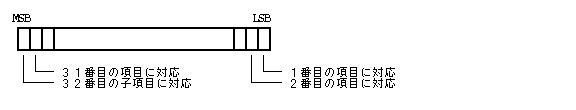
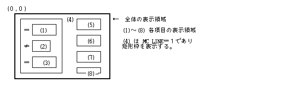
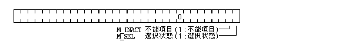

Меню та командні інтерфейсиマネージャは外殻の HMI 機能の 1 つとして位置付けられ、 標準Меню та командні інтерфейси、 および汎用Меню та командні інтерфейсиの表示 / 操作 / 登録 / 削除等の機能を提供している。 アプリケーションプログラムは、 このМеню та командні інтерфейсиマネージャを通して容易に標準Меню та командні інтерфейсиおよび汎用Меню та командні інтерфейсиを使用することができる。
本仕様書では、 Меню та командні інтерфейсиの標準的な形状に関して説明しているが、 表示形状の詳細はインプリメントに依存する。
1 レベルのポップアップМеню та командні інтерфейсиを標準Меню та командні інтерфейсиとしているが、 特殊な場合として 1 レベルのポップアップМеню та командні інтерфейсиも存在する。
最初に表示されるМеню та командні інтерфейсиをメインМеню та командні інтерфейсиと呼び、 項目を選択することにより表示される 2 段目のМеню та командні інтерфейсиをサブМеню та командні інтерфейсиと呼ぶ。 サブМеню та командні інтерфейсиを開くための項目を親項目 ( 代表項目 ) と呼び、 サブМеню та командні інтерфейсиを開かずに最終的な指示を与える項目を子項目 ( 末端項目 ) と呼ぶ。
通常、 メインМеню та командні інтерфейсиの項目は親項目であるが、 子項目をメインМеню та командні інтерфейсиの項目とすることも可能である。
Меню та командні інтерфейсиは項目名を縦方向に並べた矩形であり。 Системні панелі (Panels)と同様の逆 L 字型に引かれた陰影を持っている。 項目名の文字はシステム標準の文字が使用され、 項目の位置にポインタが行くと項目名が反転表示される。
また、Меню та командні інтерфейси項目が多くあった場合に、 煩雑になるのを避け視認性を上げるために、 項目をグループ分けするための点線を項目間に挿むことができる。
キーマクロで起動するように設定されているМеню та командні інтерфейсиの子項目については、 その項目と同じ行に右詰めで、 設定されているマクロ文字があらわれる。
項目が多すぎて、画面に収まりきらない場合は、 左右に 2 分割されて表示される。
Меню та командні інтерфейсиの項目は大きく以下のように分類される。
選択されたことにより、 一つの状態を設定するようなコマンドでは、 その項目の前にインジケータが付く。 状態が設定されている場合インジケータが ON 状態になる。
選択されたことにより即何らかの動作を引き起こす一般の項目を動作項目と呼ぶ。
ある時点で使用不可能な選択できない項目を不能項目と呼び、 その項目の文字は灰色化表示される。 また、対応するサブМеню та командні інтерфейсиの全ての項目が不能項目の場合、 その親項目も不能項目となり、 対応するサブМеню та командні інтерфейсиは表示されることはない。 灰色化表示とは、 使用できないことを明確に見分けることができるようにした「弱い」表示である。
また、親項目が不能項目の場合は、 選択できないため、 対応するサブМеню та командні інтерфейсиは表示されることはない。
強調するために、下線が引かれた項目を強調項目と呼ぶ。 これは、文字属性を設定するМеню та командні інтерфейсиの設定項目において、 その属性の文字データが存在する場合と、 存在しない場合とがソフトウェアによって生成できる場合を表示上見分ける場合等に使用する。 この場合データが存在する項目を強調項目とする。
Меню та командні інтерфейсиはポインタの下に表示され、 最初にポインタの位置に表示される項目を起点項目と呼ぶ。 起点項目の表示方法として以下のいずれかを指定することができる。
表示する位置をポインタに揃えたため、 Меню та командні інтерфейсиがスクリーンの上、 下端にぶつかるような場合は、 スクリーンの端にМеню та командні інтерфейсиの端が揃うように移動して表示される。 従って、 この場合はポインタの位置は上記の指定した位置とは異なることになる。
サブМеню та командні інтерфейсиは反転状態にあるメインМеню та командні інтерфейсиの親項目の右横に、 出来る限り親項目と上端を揃えるようにして現れる。 このときメインМеню та командні інтерфейсиに対し左に 8 ドット程度オーバラップして現れる。
親項目の右横に、 上端を揃えたためスクリーンの下端にぶつかるような場合は、 スクリーンの下端に下端を揃えた形で現れる。
メインМеню та командні інтерфейсиまたはサブМеню та командні інтерфейсиがスクリーンの右端にぶつかるような場合は、 左にづらして表示される。 サブМеню та командні інтерфейсиが、スクリーンの右端にはみ出てしまう場合は、 サブМеню та командні інтерфейсиはメインМеню та командні інтерфейсиの右側ではなく、 左側に表示される。親項目が 1 つのみの場合は、 1 レベルのМеню та командні інтерфейсиとなり、 サブМеню та командні інтерфейсиがメインМеню та командні інтерфейсиのごとく直接表示される。 表示の位置は、メインМеню та командні інтерфейсиの場合と同様である。
メインМеню та командні інтерфейси、 サブМеню та командні інтерфейсиの項目の数は一画面に表示できる数を最大とする。 なお、画面に表示しきれない項目を、 スクロールや段組みによって表示するインプリメントも考えられる。 また、各項目の文字数はインプリメント依存であるが、 なるべく短いことが望ましい。
標準Меню та командні інтерфейсиの表示に関しての属性として以下の項目が定義されており、 個々のМеню та командні інтерфейсиに対して指定可能である。 また、表示属性を指定せずにデフォルトとすることも可能である。
なお、Меню та командні інтерфейсиが表示されている間は、 原則的にスクリーン上の他の全ての描画は停止することになる。

Меню та командні інтерфейсиボタンをプレスするか、 または[命令]キーを押した状態で PD をプレスすると、 メインМеню та командні інтерфейсиが表示され、 ポインタの位置の起点項目は反転表示される。
項目にポンイタを合わせることにより、 その項目が反転表示される。 ただし、不能項目や区切り線は反転しない。
親項目内でプレスまたはクリックするか、 親項目内にある一定時間ポインタが滞在していると、 サブМеню та командні інтерфейсиが表示される。
サブМеню та командні інтерфейсиが表示され、 ポインタを親項目からサブМеню та командні інтерфейсиの子項目に移動するとき、 斜めにポインタを移動すると、 サブМеню та командні інтерфейсиを表示していない親項目上を通過することがある。 このとき、通過途中の親項目より別のサブМеню та командні інтерфейсиが現われないよう、 ある一定時間親項目の反転が保持され、サブМеню та командні інтерфейсиは表示され続ける。
サブМеню та командні інтерфейсиが表示されるまでの時間、 及び親項目の反転が保持される時間をディレイタイムとよび、 任意に設定することができる。
サブМеню та командні інтерфейсиが表示されている親項目以外のメインМеню та командні інтерфейсиの項目をプレスまたはクリックするか、 そのような項目にポインタがディレイタイム以上留まると、 サブМеню та командні інтерфейсиは消去される。
また、 サブМеню та командні інтерфейсиが表示された時点のポインタ位置からサブМеню та командні інтерфейсиとは反対方向に、 親項目の領域内を 1 文字分水平移動するか、 もしくは親項目の領域外へ移動するとサブМеню та командні інтерфейсиは消える。
子項目をクリックすることで項目が選択され、 Меню та командні інтерфейсиは終了し消える。 サブМеню та командні інтерфейсиの不能項目や区切り線が選択された場合は、 Меню та командні інтерфейси動作は継続する。
ポインタがМеню та командні інтерфейсиを外れると、 子項目の反転表示はなくなる。 表示されているサブМеню та командні інтерфейсиは、 そのまま表示されメインМеню та командні інтерфейсиの親項目の反転表示もそのまま残る。 この状態でクリックすると、 Меню та командні інтерфейсиの表示が消えるだけで何も起らない。
Меню та командні інтерфейсиボタンをクリックするとМеню та командні інтерфейсиは消え、 何も起らない。
反転した親項目上でクリックすると、 その時点で表示されているサブМеню та командні інтерфейси以外のサブМеню та командні інтерфейсиは表示できなくなる。 この状態をロック状態という。 つまりロック状態ではポインタを移動したり、 別の親項目上にポインタをもってきても、 サブМеню та командні інтерфейсиが消えたり、 新たなサブМеню та командні інтерфейсиが表示されたりはしない。
ロックされていない他の親項目上でクリックすることで、 ロック状態は切り換わり、新しいサブМеню та командні інтерфейсиがロックされる。
ロック状態はロックされている親項目か、 不能項目になっている親項目をクリックすることで解除される。
1 レベルのМеню та командні інтерфейсиの場合は、直接 ( サブ ) Меню та командні інтерфейсиが表示され、 ポインタの位置の子項目は反転表示される。
ポインタが ( サブ ) Меню та командні інтерфейсиを外れると、 反転した子項目がなくなるが、表示は残る。 この状態でリリースすると何も起らない。
マクロ文字のついた子項目は[命令]キーとともに指定された文字キーをプレスすることで、 選択することができる。 この場合は、 Меню та командні інтерфейсиの表示は一切行なわれない。
標準Меню та командні інтерфейсиは以下に示す表示属性を持ち、 この属性に従って表示が行なわれる。
typedef struct menudisp {
UW m_frame; /* メインМеню та командні інтерфейсиの枠の幅/パターン */
UW s_frame; /* サブМеню та командні інтерфейсиの枠の幅/パターン */
UW m_bgpat; /* メインМеню та командні інтерфейсиの背景パターン */
UW s_bgpat; /* サブМеню та командні інтерфейсиの背景パターン */
UW s_indpat; /* インジケータのパターン */
COLOR m_chcol; /* メインМеню та командні інтерфейсиの項目文字色 */
COLOR s_chcol; /* サブМеню та командні інтерфейсиの項目文字色 */
COLOR s_keycol; /* サブМеню та командні інтерфейсиのキーマクロ文字色 */
} MENUDISP;
m_frame / s_frame の内容は以下の通りである。

枠の幅は最大 8 ピクセルであり、 それ以上指定しても 8 ピクセル幅となる。
m_bgpat / s_bgpat は、
それぞれ背景パターンを "PAT_DATA"
タイプとして登録してあるデータ番号で指定する。
0 はデフォルトを意味する。
s_indpatは、インジケータのパターンを
"PAT_DATA"
タイプとして登録してあるデータ番号で指定する。
0 はデフォルトを意味する。
m_chcol / s_chcol は、
Меню та командні інтерфейси項目の文字および区切線の色を指定するが、
Меню та командні інтерфейси項目毎に色の指定も可能となる。
COLORVAL で指定した値が < 0 の場合は、
デフォルト値とすることを意味する。
デフォルト値はМеню та командні інтерфейсиマネージャにより適当な値が規定されているが、 デフォルト値自体も変更可能である。 デフォルト値を変更した場合は、 変更以後に表示される全てのデフォルト属性を持つ標準Меню та командні інтерфейсиに反映される。
また、 以下の表示位置に関する指定を行なうことができる。 この指定は、 すべてのМеню та командні інтерфейсиに共通であり、 個々のМеню та командні інтерфейсиごとに指定することはできない。
M_FIXPOS
M_LASTPOS
Меню та командні інтерфейсиは複数の項目リストの順番を持った集まりとして定義される。 1 つの項目リストは親項目と、 それに対応する複数の子項目から構成され、 1 つの文字列として以下の形で定義される。 項目の最大数は 128 個までであり、 先頭の項目が親項目となり、 続いて127 個の子項目が続く。 項目が 1 つのみの場合は親項目は存在せず、 その項目は子項目と見なされる ( 実際に登録できる項目数は画面の大きさに依存する ) 。
ここで、[..]は省略可能、｜ は選択 ( OR )、... は繰り返しを意味する。
<親項目指定>[<子項目指定>...]<TNULL>
<親項目指定> および <子項目指定> は、以下の形式となる。
<属性コード>[<文字属性指定>｜<図形指定>][<マクロ文字>...]<項目文字列>
属性コード ( メタコード ) は、 区切り文字としての意味と、 続く項目の属性指定の意味を持つ。 また <TNULL> は文字列の終端としての 0 である。

MC_FIG :
0 -- 文字項目
1 -- 図形項目
MC_ATTR :
0 -- 標準属性の文字列 ( MC_FIG = 0 の時のみ有効 )
1 -- 指定属性の文字列 ( MC_FIG = 0 の時のみ有効 )
文字項目の場合は、Меню та командні інтерфейси項目は文字列であり、
MC_ATTR = 1 の場合は直後に 12
バイトの文字属性指定コード列が存在し、
その後に項目としての文字列がくる。
MC_ATTR = 0 の場合は文字属性指定コードは存在せず、
直後に項目としての文字列がくる。
文字列は属性コードまたは TNULL コード ( = 0 ) で終了し、
後者の場合は全体の終了を意味する。
文字列としては表示可能な任意の文字が許され、
それ以外のものは無視される。
文字属性指定コードは以下に示す 12 バイト固定のデータである。
COLORVAL chcol -- 文字色指定(-1は文字色指定無し)
WORD class -- Управління шрифтами (Font Manager)クラス指定 (-1はデフォルトУправління шрифтами (Font Manager))
UWORD attr -- Управління шрифтами (Font Manager)属性指定(0は通常体)
PNT csize -- Управління шрифтами (Font Manager)サイズ指定
(csize.c.h または csize.c.v が≦0のときデフォルトサイズ)
システム標準文字サイズより大きいサイズは指定できない。
MC_ATTR = 0は、
文字色指定無し、デフォルトУправління шрифтами (Font Manager)、通常体を意味する。
文字色指定無しの場合は、
Меню та командні інтерфейсиの表示属性として定義された文字色が適用される。
図形項目の場合は、Меню та командні інтерфейси項目は図形の矩形表示となり、
MC_ATTR は無視される。
この場合、直後に以下の2ワードの図形指定コードがくる。
TTTT DDDD DDDD DDDD
0000 0000 000L LLLL
T:図形のデータタイプ ID
0:ポインタイメージ ("PTR_DATA" )
1:ピクトグラムイメージ ("PICT_DATA")
2:パターンデータ ("PAT_DATA" )
3:ビットマップデータ ("BMAP_DATA")
4〜:予約
D:図形のデータ番号 (0の場合、または存在しない
データの場合は何も表示されない)
l:図形の横幅文字数 (1〜16)
図形項目は、Lで指定した1〜16文字分の矩形領域に表示される。
MC_LINE :
0 -- 通常項目
1 -- 区切線 ( 全体の矩形の横幅一杯の点線が表示される )
区切線の色は、Меню та командні інтерфейсиの文字色の色と同じである。
MC_LINE = 1の場合は、
他のすべての属性は無視され、 常に選択不可となる。
親項目で MC_LINE = 1 の場合は、
親項目、子項目は実際には表示されず無視される。
MC_KEY :
指定されているキーマクロの個数を示す ( 0 はキーマクロ無し )。最大 15 個までのキーマクロが 1 つの項目に対して指定可能であり、 属性コードの直後に個数分のキーマクロ文字コードが続き、 その先頭の 1 文字が項目の後ろに表示される。 キーマクロ文字の色はМеню та командні інтерфейсиの表示属性として定義された色が適用される。
文字属性指定や図形指定の場合は、 文字属性指定コードや図形指定コードの次にキーマクロ文字コードがくる。
キーマクロ文字の言語はシステムスクリプトとして解釈される。
MC_IND :
0 -- 動作項目
1 -- 状態項目 (項目の前にインジケータが表示される。)
親項目の場合、MC_IND は無視される。
インジケータの色はМеню та командні інтерфейсиの表示属性として定義された色が適用される。
MC_SEL :
0 -- 非選択状態 (インジケータはOFF表示)
1 -- 選択状態 (インジーケータはON表示)
親項目の場合、または、MC_IND＝0 の場合は無視される。
MC_EMPHAS :
0 -- 通常項目
1 -- 強調項目 (項目の表示に下線がつけられる)
MC_INACT :
0 -- 正常項目
1 -- 不能項目 (灰色化表示され一切選択することはできない。親項目の場合はその子項目は表示されない)

1 つのМеню та командні інтерфейси項目 ( 親項目と、子項目の組 ) は以下の形で定義される。
typedef struct menuitem {
UW inact; /* 不能項目フラグ */
UW select; /* 選択フラグ */
W desc; /* 内部ディスクリプタ */
W dnum; /* 項目リストのデータ番号 */
TC *ptr; /* 項目リストへのポインタ */
} MENUITEM;
不能項目フラグ ( inact )
は以下に示す形で各項目にビット対応する。
このフラグは、属性コードの MC_INACT と同じ効果を持つが、
属性コードを変更せずに一時的に不能項目とする場合に使用される。
このフラグが 1 の場合、または属性コードの MC_INACT が 1
の場合に不能項目と見なされる。
このフラグは項目番号 0 〜 31 に対応する項目にしか有効でないが、
mchg_atr() を使用することで項目番号 32 〜 127
に対応する項目を設定することができる。

選択フラグ ( select )
も不能項目フラグと同様に各項目にビット対応しており、
属性コードの MC_SEL と同様の効果を持つものである。
属性コードの MC_IND = 1 の場合で、
MC_SEL = 1、またはこのフラグが 1 の場合に、
インジケータが ON 表示となる。
このフラグも項目番号 0 〜 31 に対応する項目にしか有効でないが、
mchg_atr() を使用することで項目番号 32 〜 127
に対応する項目を設定することができる。
動的に不能項目、選択項目が変化する場合は、
通常、属性コードの MC_INACT, MC_SEL
は設定せず、不能項目フラグ、選択フラグを使用する。
項目リストは、メモリ上のデータとして直接、
そのポインタで指定する場合と、データマネージャにより
"TEXT_DATA"
タイプのデータとして管理されているものを指定する場合の 2 つがある。
ポインタで指定する場合は、dnum = 0 とし、ptr
に項目リストへのポインタを設定する。ptr = NULL の場合は、
Меню та командні інтерфейсиとしては何も表示されないが、
Меню та командні інтерфейсиの登録後に親項目を所定の位置に追加したい場合には、
その位置にあらかじめ、ptr = NULL
のМеню та командні інтерфейси項目を定義しておく必要がある。
データマネージャ管理のデータの場合には、dnum
に "TEXT_DATA" タイプのデータ番号 ( > 0 )
を設定する。この場合、ptr は無視される。
内部ディスクリプタ ( desc ) は、dnum
で項目リストが指定されていた場合、
その共有メモリのアドレスを入れる内部領域であり、
定義 / 設定時には無視される。
Меню та командні інтерфейси全体は、Меню та командні інтерфейси項目の配列の形で定義される。
親項目の数が 1 の場合は、1 レベルのМеню та командні інтерфейсиとなり、 親項目は表示されないことになるが、 Меню та командні інтерфейси項目としてはやはり親項目がなくてはいけない。 ただし、この場合、親項目はその属性も含めて無視されるので、 空の文字列であってもよい ( 不能項目であってはならない )。
Меню та командні інтерфейсиでの子項目は、以下の選択番号で表わされる。

<親項目番号> はМеню та командні інтерфейси項目の定義順の番号で、先頭は 0 である。
<子項目番号> は 1 つの項目リスト内の項目順で、 先頭は 0 であるが、 先頭の親項目は選択されることがないので、 実際には 1 からとなる ( 区切りの横線も 1 つの項目として数えられる)。 子項目のみの項目リストの場合は、 子項目番号は常に 1 となる。 1 レベルのМеню та командні інтерфейсиの場合は、 親項目番号は常に 0 となり、子項目番号 ( 1 〜 ) のみとなる。
汎用Меню та командні інтерфейсиは、1 レベルのポップアップМеню та командні інтерфейсиであり、 標準Меню та командні інтерфейсиのサブМеню та командні інтерфейсиと似ているが、 項目の配置を 2 次元的に任意に指定可能である。
通常、汎用Меню та командні інтерфейсиはコントロールКомпоненти графічного інтерфейсуのスイッチと組み合せて、 ポップアップセレクタを実現するために使用される。
なお、汎用Меню та командні інтерфейсиも標準Меню та командні інтерфейсиと同様に表示されている間は、 原則的にスクリーン上の他の全ての描画は停止することになる。

PD のドラッグにつれて、 表示領域中の項目が仮選択状態になり、 リリースした時点でその項目が選択され、表示領域は消える。
ドラッグ中に表示領域外にポインタが出ると仮選択状態の項目はなくなり、 リリースしても表示領域が消えるだけで何も起らない。
表示領域中の項目の矩形領域内にポインタが入っている場合に、 その項目が仮選択されたことになる。 どの項目の矩形領域にも入っていない場合、 または不能状態の項目の矩形領域の場合は、仮選択の表示はなく、 そこでリリースしても何も起らない。
汎用Меню та командні інтерфейсиは、 標準Меню та командні інтерфейсиのМеню та командні інтерфейси項目と良く似た以下の構造によリ定義される。 Меню та командні інтерфейсиの項目は最大 128 個までである。
typedef struct gmenu {
UW frame; /* フレーム属性 */
UW bgpat; /* 背景パターン */
UW indpat; /* インジケータのパターン */
COLOR chcol; /* 項目文字 / 区切枠の色 */
RECT area; /* 全体の表示領域 */
UW inact; /* 不能項目フラグ */
UW select; /* 選択フラグ */
W desc; /* 内部ディスクリプタ */
W dnum; /* 項目リストのデータ番号 */
TC *ptr; /* 項目リストへのポインタ */
W nitem; /* 項目数 */
RECT r[32]; /* 項目の表示領域(nitem個:32より大きい場合もある) */
} GMENU;
frame の内容は以下の通りである。
bgpat, indpat は、
それぞれ背景パターンとインジケータのパターンを、
"PAT_DATA"
タイプとして登録してあるデータ番号で指定したもので、
0 の場合は、デフォルト値を意味する。
chcol は、項目文字 / 区切枠の色を示し、< 0 の場合は、
それぞれデフォルト値を意味する。
area は、
ポップアップする全体の矩形領域を絶対座標で指定するものであるが、
実際は表示時に位置を指定するため大きさのみ意味を持つ。
従って、通常は左上の点を ( 0, 0 ) と指定する。
inact, select, desc, dnum, ptrは、
それぞれ標準Меню та командні інтерфейсиと同じ意味を持つ。
ただし、親項目は存在せず、不能項目フラグ、
選択フラグの親項目に対応するビット ( LSB ) は最初の ( 子 )
項目に対応することになり、
項目リストの先頭は最初の ( 子 ) 項目となる。
Меню та командні інтерфейсиの項目は、1 〜 128 の番号で区別される。

nitem は項目数であり、最大 128 である。
r は、各項目が表示される矩形領域の nitem
個の配列であり、 全体の表示領域の左上を ( 0, 0 ) とした座標で定義される。
項目リストの内容は、 親項目が存在しない点を除いて、 基本的に標準Меню та командні інтерфейсиの場合と同一であるが、 属性コードの意味は以下の点が異なる。
MC_FIG = 1 ( 図形項目 ) の場合、
続く図形指定データの 2 ワード目の文字幅は必要であるが、
意味を持たない。
MC_FIG = 0 ( 文字項目 ) の場合、
表示領域内で左上詰めに表示される。
MC_LINE = 1 (区切線) の場合、
横線ではなく、表示領域を囲む矩形枠となる。
MC_KEY は使用されず、
無視される。
MC_IND = 1 の場合、
インジケータは表示領域の直前に描画されるため、
その領域を考慮する必要がある。

typedef W MNID;
#define MC_LINE 0x1004 /* 区切線 */
#define MC_KEY 0x10f0 /* キーマクロの個数マスク */
#define MC_IND 0x1100 /* インジケータ有無 */
#define MC_SEL 0x1200 /* インジケータ状態 */
#define MC_KEY1 0x1010 /* キーマクロ 1 個 */
#define MC_KEY2 0x1020 /* キーマクロ 2 個 */
〜
#define MC_KEY14 0x10e0 /* キーマクロ 14 個 */
#define MC_KEY15 0x10f0 /* キーマクロ 15 個 */
typedef struct menuitem {
UW inact; /* 不能項目フラグ */
UW select; /* 選択フラグ */
W desc; /* 内部ディスクリプタ */
W dnum; /* 項目リストのデータ番号 */
TC *ptr; /* 項目リストへのポインタ */
} MENUITEM;
typedef struct menudisp {
UW m_frame; /* メインМеню та командні інтерфейсиの枠の幅/パターン */
UW s_frame; /* サブМеню та командні інтерфейсиの枠の幅/パターン */
UW m_bgpat; /* メインМеню та командні інтерфейсиの背景パターン */
UW s_bgpat; /* サブМеню та командні інтерфейсиの背景パターン */
UW s_indpat; /* インジケータのパターン */
COLOR m_chcol; /* メインМеню та командні інтерфейсиの項目文字色 */
COLOR s_chcol; /* サブМеню та командні інтерфейсиの項目文字色 */
COLOR s_keycol; /* サブМеню та командні інтерфейсиのキーマクロ文字色 */
} MENUDISP;
typedef struct gmenu {
UW frame; /* フレーム属性 */
UW bgpat; /* 背景パターン */
UW indpat; /* インジケータのパターン */
COLOR chcol; /* 項目文字／区切枠の色 */
RECT area; /* 全体の表示領域 */
UW inact; /* 不能項目フラグ */
UW select; /* 選択フラグ */
W desc; /* 内部ディスクリプタ */
W dnum; /* 項目リストのデータ番号 */
TC *ptr; /* 項目リストへのポインタ */
W nitem; /* 項目数 */
RECT r[32]; /* 項目の表示領域(nitem個) */
} GMENU;
#define M_STAT 0 /* 変更しない */ #define M_SEL 1 /* 選択状態とする */ #define M_NOSEL 4 /* 選択状態としない */ #define M_ACT 8 /* 不能項目としない */ #define M_INACT 2 /* 不能項目とする */
#define M_LASTPOS 0x0000 /* 起点項目は最後に使用したメイン項目 */ #define M_FIXPOS 0x0002 /* 起点項目は2番目のメイン項目 */
|
MNID mcre_men(W nitem, MENUITEM *item, MENUDISP *attr)
W nitem 親項目数 MENUITEM *item Меню та командні інтерфейси項目配列 MENUDISP *attr Меню та командні інтерфейси表示属性
≧ 0 正常 (関数値は登録されたМеню та командні інтерфейси ID) ＜ 0 エラー (エラーコード)
nitem で指定した親項目数を持つ標準Меню та командні інтерфейсиを登録する。
item は nitem
個の要素数を持つМеню та командні інтерфейси項目配列へのポインタである。即ち、
item[n] n 番目のМеню та командні інтерфейси項目 (n=0〜nitem-1)
nitem = 1 の場合は、1 レベルのМеню та командні інтерфейсиとなり
item[0]
で指定されるМеню та командні інтерфейси項目の親項目は実際には表示されない。
nitem が画面に表示できる最大項目数を越える場合は、
この最大項目数が nitem として登録される。
attr はМеню та командні інтерфейсиの表示属性を指定するもので、
attr = NULL の場合は、
デフォルト属性を意味する。
表示属性で指定されたパターンデータ番号が不正な場合は、
デフォルトパターンで登録される。
登録後も、item で指定した
Меню та командні інтерфейси項目内の ptr で示された項目リストは参照されるため、
保存しておかなければいけない。
なお、項目リストの内容を直接変更した場合は、
必ず mset_itm() により再設定しない限り表示は保証されない。
nitem
と同様に項目リストの子項目数が画面に表示できる最大項目数を越える場合は、
この最大項目数までが参照される。
項目の最大文字数はインプリメントに依存し、
長すぎる場合は途中までが参照される。
この関数ではМеню та командні інтерфейсиの登録のみを行ない、
Меню та командні інтерфейсиの実際の表示は msel_men() により行なわれる。
関数値としてМеню та командні інтерфейси ID ( > 0 ) が戻され、 以後そのМеню та командні інтерфейсиの操作の際に使用する。 Меню та командні інтерфейси ID はПроцеси та потоки依存であるため登録したПроцеси та потокиでのみ有効であり、 Меню та командні інтерфейси ID を他のПроцеси та потокиに渡してМеню та командні інтерфейсиの操作を行なうことはできない。
EX_ADR : アドレス(item,attr)のアクセスは許されていない。 EX_NOSPC : システムのメモリ領域が不足した。 EX_PAR : パラメータが不正である(nitem,Меню та командні інтерфейси項目が不正)。
メモリ領域が不足して登録できない場合、通常は核エラーコードが返される。
|
MNID mopn_men(W dnum)
W dnum MENU_DATA タイプのデータ番号
≧ 0 正常(関数値は登録されたМеню та командні інтерфейсиID) ＜ 0 エラー(エラーコード)
dnum で指定したデータ番号を持つ、
"MENU_DATA"
タイプのデータボックス定義データにより標準Меню та командні інтерфейсиを登録する。
この関数は、
Меню та командні інтерфейсиの定義データがデータボックスとして定義されている点を除いて、
その動作は、mcre_men() と全く同一である。
EX_DNUM : データ(dnum等)はデータマネージャに登録されていない。 EX_NOSPC : システムのメモリ領域が不足した。 EX_PAR : パラメータが不正である(nitem,Меню та командні інтерфейси項目が不正)。
メモリが不足して登録できない場合、通常は核エラーコードが返される。
|
ERR mdel_men(W mid)
W mid Меню та командні інтерфейсиID
≧ 0 正常 ＜ 0 エラー(エラーコード)
mid で指定した登録済み標準Меню та командні інтерфейсиを削除する。
登録したПроцеси та потокиが終了した場合、Меню та командні інтерфейсиは自動的に削除されるが、 基本的に不要になった時点で明示的に削除することが望ましい。
EX_MID : Меню та командні інтерфейси(mid) は存在していない
(標準Меню та командні інтерфейсиでない場合も含む)。
|
W msel_men(W mid, PNT pos)
W mid Меню та командні інтерфейсиID PNT pos 画面上の絶対座標位置
≧ 0 正常(関数値は選択された項目の選択番号(選択されなかった場合は0)) ＜ 0 エラー(エラーコード)
mid で指定した登録済み標準Меню та командні інтерфейсиを pos
で指定したスクリーン上の絶対座標位置に表示し、
PD の移動に従った選択動作を行ない、
PD のクリックにより表示を消して選択された項目の選択番号を関数値として戻す。
何も選択されなかった場合は、関数値は 0 となる。
posは、
Меню та командні інтерфейсиイベントが発生した位置を絶対座標を指定する。
Меню та командні інтерфейси動作にに発生した
EV_BUTDWN, EV_BUTUP, EV_KEYDWN, EV_KEYUP, EV_AUTKEY は、
イベントキューから取り除かれて捨てられる。
それ以外のイベントはイベントキューに残される。
なお、この関数内ではポインタ形状変更は行なわないため、 通常、実行前に「選択指」のポインタ形状にしておく必要がある。
イメージ退避領域確保できない場合は、 Меню та командні інтерфейси動作終了後すべてのВіконна система (Windowing System)に再表示要求が送られる。
EX_MID : Меню та командні інтерфейси(mid)は存在していない
(標準Меню та командні інтерфейсиでない場合も含む)。
|
W mfnd_key(W mid, TC ch)
W mid Меню та командні інтерфейсиID TC ch 文字コード
≧ 0 正常 (関数値はキーマクロ項目の選択番号
(定義されていなかった場合は0))
＜ 0 エラー (エラーコード)
mid で指定した標準Меню та командні інтерфейси内に、
ch
で指定した文字がキーマクロとして定義されているか否かを調べ、
定義されていた場合は、
関数値として対応する項目の選択番号を戻し、
定義されていなかった場合は関数値として 0 を戻す。
この関数は、通常 [命令]
キーと同時にキーが押された場合に呼ばれ、
その時のキーに対応する文字コードを ch として渡すことになる。
システムПовідомленняСистемні панелі (Panels)のクイック起動Системні панелі (Panels)は、
命令 + 特殊文字として入力される。
アプリケーションは、
命令 + 文字を受け取ったらこの関数を実行してイベントを解釈する必要がある。
文字コードの言語はシステムスクリプトとして解釈される。
EX_MID : Меню та командні інтерфейси (mid) は存在していない
(標準Меню та командні інтерфейсиでない場合も含む)。
|
W mget_itm(W mid, W pnum, MENUITEM *item)
W mid Меню та командні інтерфейсиID W pnum 親項目番号 MENUITEM *item Меню та командні інтерфейси項目
≧ 0 正常 ＜ 0 エラー(エラーコード)
mid で指定した標準Меню та командні інтерфейсиの pnum
で指定した親項目番号 ( 0 〜 ) のМеню та командні інтерфейси項目の内容を取り出し、
item で指定した領域に格納する。
関数値は0が戻る。
EX_ADR : アドレス(item)のアクセスは許されていない。
EX_MID : Меню та командні інтерфейси(mid)は存在していない
(標準Меню та командні інтерфейсиでない場合も含む)。
EX_PAR : パラメータが不正である(pnum が不正)。
|
ERR mset_itm(W mid, W pnum, MENUITEM *item)
W mid Меню та командні інтерфейсиID W pnum 親項目番号 MENUITEM *item Меню та командні інтерфейси項目
≧ 0 正常 ＜ 0 エラー(エラーコード)
mid で指定した標準Меню та командні інтерфейсиの pnum
で指定した親項目番号 ( 0 〜 ) のМеню та командні інтерфейси項目の内容を、
item で指定した領域に格納してある内容に変更する。
項目リストの内容を直接変更した場合は、
Меню та командні інтерфейси項目の内容自体は変更なくても、
mset_itm() を行なう必要がある。
EX_ADR : アドレス(item)のアクセスは許されていない。 EX_MID : Меню та командні інтерфейси(mid)は存在していない(標準Меню та командні інтерфейсиでない場合も含む)。 EX_PAR : パラメータが不正である(pnum が不正、Меню та командні інтерфейси項目の内容が不正)。 EX_DNUM : データ番号で指定したデータがデータマネージャに登録されていない。
|
W mchg_atr(W mid, W selnum, UW mode)
W mid Меню та командні інтерфейсиID
W selnum 選択番号
UW mode ::= ( M_STAT) ‖ (( M_SEL ‖ M_NOSEL) | ( M_ACT ‖ M_INACT) )
M_STAT ： 変更しない。 (現在の属性を取り出す)
M_SEL ： 選択状態とする。 (選択フラグをセット)
M_NOSEL： 選択状態としない。(選択フラグをリセット)
M_ACT ： 不能項目としない。(不能項目フラグをリセット)
M_INACT： 不能項目とする。 (不能項目フラグをセット)
≧ 0 正常(関数値は項目の現在の属性) ＜ 0 エラー(エラーコード)
mid で指定した標準Меню та командні інтерфейсиの selnum
で指定した選択番号を持つМеню та командні інтерфейси項目の不能項目フラグ、
選択フラグを変更して、
その結果としての現在の属性を関数値として戻す。
Меню та командні інтерфейси項目リスト内の属性コード自体は変更されない。
関数値として戻る現在の属性は以下に示す内容となる。
この属性は項目リスト内の属性コードも考慮した実際の属性であるため、
M_NOSEL、または M_ACT
を指定した場合でも属性コードの値によっては、変化しない場合もある。
動作項目の場合 (MC_IND=0) は、
M_SEL / M_NOSEL の指定は無視され、
関数値の M_SEL は常に 0 となる。
EX_MID : Меню та командні інтерфейси(mid)は存在していない(標準Меню та командні інтерфейсиでない場合も含む)。 EX_PAR : パラメータが不正である(selnum が不正)。
|
W mchg_dsp(MENUDISP *attr, W posattr)
MENUDISP *attr Меню та командні інтерфейси表示属性 W posattr 表示位置属性
≧ 0 正常(関数値は変更後の表示位置属性) ＜ 0 エラー(エラーコード)
標準Меню та командні інтерфейсиのデフォルト表示属性を、
attr で指定した内容に変更し、
表示位置属性を posattr で指定した値に変更する。
変更した内容は、以後の全てのМеню та командні інтерфейси表示に反映される。
attr = NULL の場合は表示属性は変更せず、
posattr < 0 の場合は表示位置属性は変更しない。
関数値として変更後の表示位置属性が戻る。
EX_ADR : アドレス(attr)のアクセスは許されていない。 EX_DNUM : データ番号で指定したデータがデータマネージャに登録されていない。
|
MNID mcre_gmn(GMENU *gm)
GMENU *gm 汎用Меню та командні інтерфейси
≧ 0 正常(関数値は登録されたМеню та командні інтерфейсиID) ＜ 0 エラー(エラーコード)
gm で指定した汎用Меню та командні інтерфейсиを登録する。
登録後も、gm で指定した
Меню та командні інтерфейси項目内の ptr で示された項目リストは参照されるため、
保存しておかなければいけない。
項目リストの内容は登録後は変更することはできない。
項目数が 32 を越える場合は、32 として登録する。
表示属性で指定されたパターンデータ番号が不正な場合は、 デフォルトパターンで登録される。
この関数では、Меню та командні інтерфейсиの登録のみで、
Меню та командні інтерфейсиの実際の表示は msel_gmn() により行なわれる。
関数値としてМеню та командні інтерфейси ID ( > 0 ) が戻され、 以後そのМеню та командні інтерфейсиの操作の際に使用する。 Меню та командні інтерфейси ID はПроцеси та потоки依存であるため登録したПроцеси та потокиでのみ有効であり、 Меню та командні інтерфейси ID を他のПроцеси та потокиに渡してМеню та командні інтерфейсиの操作を行なうことはできない。
EX_ADR : アドレス(gm)のアクセスは許されていない。 EX_NOSPC : システムのメモリ領域が不足した。 EX_PAR : パラメータが不正である(Меню та командні інтерфейсиの内容が不正)。
メモリ領域が不足して登録できない場合、通常は核エラーコードが返される。
|
MNID mopn_gmn(W dnum)
W dnum GMENU_DATA タイプのデータ番号
≧ 0 正常(関数値は登録されたМеню та командні інтерфейсиID) ＜ 0 エラー(エラーコード)
dnum で指定したデータ番号を持つ、
" GMENU_DATA"
タイプのデータボックス定義データにより汎用Меню та командні інтерфейсиを登録する。
この関数は、
Меню та командні інтерфейсиの定義データがデータボックスとして定義されている点を除いて、
その動作は、mcre_gmn() と全く同一である。
EX_DNUM : データ(dnum等)はデータマネージャに登録されていない。 EX_NOSPC : システムのメモリ領域が不足した。 EX_PAR : パラメータが不正である(Меню та командні інтерфейсиの内容が不正)。
メモリ領域が不足して登録できない場合、通常は核エラーコードが返される。
|
ERR mdel_gmn(W mid)
W mid Меню та командні інтерфейсиID
≧ 0 正常 ＜ 0 エラー(エラーコード)
mid で示された登録済み汎用Меню та командні інтерфейсиを削除する。
登録したПроцеси та потокиが終了した場合、 Меню та командні інтерфейсиは自動的に削除されるが、 基本的に不要になった時点で明示的に削除することが望ましい。
EX_MID : Меню та командні інтерфейси(mid)は存在していない(汎用Меню та командні інтерфейсиでない場合も含む)
|
W msel_gmn(W mid, PNT pos)
W mid Меню та командні інтерфейсиID PNT pos 画面上の絶対座標
≧ 0 正常(関数値は選択された項目の番号(選択されなかった場合は0)) ＜ 0 エラー(エラーコード)
mid で指定した登録済み汎用Меню та командні інтерфейсиを pos
で指定したスクリーン上の絶対座標位置に汎用Меню та командні інтерфейсиの矩形の左上の点を合わせて表示し、
PD の移動に従った選択動作を行ない、
PD の動作に応じて選択された項目の番号 ( 1 〜 128 ) を関数値として戻す。
何も選択されなかった場合は、関数値は 0 となる。
pos は、
通常Меню та командні інтерфейсиボタンのプレスが行なわれた位置を絶対座標で指定する。
pos が不正な場合は、適当な位置から動作する。
Меню та командні інтерфейси動作中に発生した
EV_BUTDWN, EV_BUTUP,EV_KEYDWN, EV_KEYUP, EV_AUTKEY は、
イベントキューから取り除かれて捨てられる。
それ以外のイベントはイベントキューに残される。
なお、この関数内ではポインタ形状変更は行なわないため、 通常、実行前に「選択指」のポインタ形状にしておく必要がある。 イメージ退避領域が確保できない場合は、 Меню та командні інтерфейси動作終了後すべてのВіконна система (Windowing System)に再表示要求が送られる。
EX_MID : Меню та командні інтерфейси(mid)は存在していない(汎用Меню та командні інтерфейсиでない場合も含む)
|
W mchg_gat(W mid, W num, UW mode)
W mid Меню та командні інтерфейсиID
W num Меню та командні інтерфейси項目番号
UW mode ::= ( M_STAT) ‖ (( M_SEL ‖ M_NOSEL) | ( M_ACT ‖ M_INACT) )
M_STAT ： 変更しない。 (現在の属性を取り出す)
M_SEL ： 選択状態とする。 (選択フラグをセット)
M_NOSEL： 選択状態としない。(選択フラグをリセット)
M_ACT ： 不能項目としない。(不能項目フラグをリセット)
M_INACT： 不能項目とする。 (不能項目フラグをセット)
≧ 0 正常(関数値は項目の現在の属性) ＜ 0 エラー(エラーコード)
mid で指定した汎用Меню та командні інтерфейсиの num
で指定したМеню та командні інтерфейси項目の不能項目フラグ、
選択フラグを変更して、その結果としての現在の属性を関数値として戻す。
項目リスト内の属性コード自体は変更されない。
関数値として戻る現在の属性は以下に示す内容となる。
この属性は項目リスト内の属性コードも考慮した実際の属性であるため、
M_NOSEL、または M_ACT
を指定した場合でも属性コードの値によっては、
変化しない場合もある。
動作項目の場合 (MC_IND = 0)は、
M_SEL / M_NOSEL の指定は無視され、
関数値の M_SEL は常に 0 となる。

EX_MID : Меню та командні інтерфейси(mid)は存在していない(汎用Меню та командні інтерфейсиでない場合も含む)。 EX_PAR : パラメータが不正である(numが不正)。
|
W mchg_dtm(W time)
W time ミリ秒単位のディレイタイム
≧ 0 正常(変更以前のディレイタイム) ＜ 0 エラー(エラーコード)
標準Меню та командні інтерфейси選択時の操作性を上げるために設定されているメインМеню та командні інтерфейси内での反応の遅れ ( ディレイタイム ) を、
time で指定した値に変更し、
変更以前の値を関数値として取り出す。
time < 0 の場合は変更せずに現在値を取り出す。
なお、システムスタートアップ時には、
ディレイタイムとして適当なデフォルト値が設定されているものとする。
発生しない